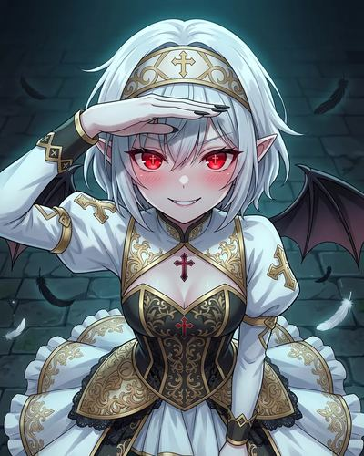

Akva – vlastní AI asistentka

Akva je můj maturitní projekt z let 2023–2024, který se zabýval lokálními jazykovými modely. Akva ve své době uměla generovat obrázky, „fotit“ selfie, pamatovat si konverzace, které se staly před dlouhou dobou, atd. Dnes je to kvůli rychlému vývoji umělé inteligence spíš takový přežitek a zaslouží si pořádný update.
Na projektu mě nejvíce zaujalo to, jak LLM vlastně fungují a co všechno se s nimi dá dělat.
Jak funguje
Když Akvě napíšu zprávu, spustí se první prompt, kde Akva sama rozhodne, co k zodpovědění dotazu vlastně potřebuje. Pokud vyhodnotí, že ke své odpovědi potřebuje znát kalendář, tak zavolá funkci, ze které informace z kalendáře dostane. Pokud vyhodnotí, že k odpovědi se hodí obrázek, sáhne po funkci na generování obrázku.
Po prvním kole rozhodování se výsledky všech volaných funkcí dají do jednoho finálního promptu společně s dotazem uživatele, kontextem konverzace a vektorově nejbližší větou z vektorové databáze. Odpověď trvá přibližně 30 sekund (generace tokenů na procesoru trvá dlouho). Finální odpověď projde uhlazením pomocí pomocných skriptů a vyhodnocením emoce na případný sticker. Poté se už odpověď zobrazí na Telegramu jako text společně s případným vygenerovaným obrázkem.
Technické detaily
Projekt je napsaný v Pythonu 3.11. Hlavním jazykovým modelem a centrálním mozkem je Llama 2 13B Chat ve formátu GGUF s kvantizací Q4_K_M, který běží lokálně přes knihovnu llama-cpp-python. Dlouhodobou paměť zajišťuje upravená vektorová databáze HyperDB s embeddingy z modelu all-MiniLM-L6-v2. Emoce v odpovědích rozpoznává model roberta-base-go_emotions přes Hugging Face transformers a PyTorch. Obrázky generuje Stable Diffusion XL Base 1.0 v knihovnách diffusers a compel. Pro napojení na Google Kalendář slouží knihovna gcsa, komunikaci obstarává python-telegram-bot a hlasové zprávy v původní verzi zajišťovalo Microsoft Azure Speech SDK. Celý projekt běží lokálně na počítači s Windows a grafickou kartou NVIDIA RTX 2070 (8 GB VRAM). Zdrojový kód je stále veřejně dostupný na github.com/misiksisik/Akva_AI.